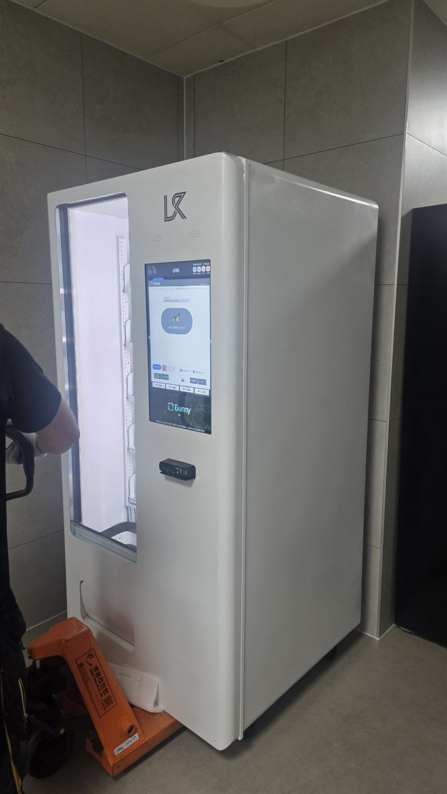

중랑구 무인자판기 설치
공장 직원 휴게 공간 냉장 스마트 자판기

작은 공장에는 매점이 없습니다. 직원 수가 수십 명 안쪽이면 구내식당도 없는 경우가 많고, 가까운 편의점까지 다녀오기에는 쉬는 시간이 짧습니다. 그래서 작업장 사장님들이 자판기를 찾는 이유는 대부분 같습니다. "쉬는 시간에 물 한 병, 커피 한 캔은 건물 안에서 해결되게 해 달라"는 것입니다.
이번 중랑구 현장은 작업장 바깥 복도 끝, 타일로 마감된 모서리 공간이었습니다. 처음 방문했을 때 자리보다 먼저 본 것은 기계가 들어올 길이었습니다. 냉장 자판기는 무게가 꽤 나가서, 문 폭과 문턱, 엘리베이터 유무에 따라 설치 방법이 달라집니다.
중랑구 공장 휴게 공간, 이렇게 꾸렸습니다
반입은 핸드자키로 했습니다. 바닥이 평평하고 문턱이 낮아 기계를 눕히지 않고 세운 채로 밀어 넣을 수 있었습니다. 냉장 기계는 눕혀서 옮기면 냉매가 자리 잡을 때까지 한동안 전원을 넣지 못하기 때문에, 세워서 옮길 수 있는 경로인지가 설치 당일 일정을 좌우합니다. 모서리에 붙이되 옆면과 뒷면은 열이 빠지도록 손 한 뼘쯤 띄웠습니다.
품목은 쉬는 시간의 모습을 보고 정했습니다. 장갑을 벗고 잠깐 나와 마시고 들어가는 시간이라 뚜껑 있는 생수와 이온음료, 캔커피를 가장 많이 깔고, 끼니를 놓친 사람을 위한 빵과 초코바를 한 칸 두었습니다. 결제는 카드와 간편결제만 받습니다.
- 기종 — 냉장 스마트 자판기 1대, 세로 터치 화면형
- 품목 — 생수·이온음료 / 캔커피·두유 / 빵·초코바
- 자리 — 작업장 바깥 복도 모서리, 작업 동선과 분리
- 결제·관리 — 카드·간편결제, 재고와 판매 기록을 휴대전화로 확인
들여놓고 보니 — 편해진 것과 신경 쓸 것
가장 먼저 달라진 건 쉬는 시간에 건물 밖으로 나가는 발걸음입니다. 음료를 사러 나갔다가 늦게 들어오는 일이 줄었고, 사장님이 박스째 사다 냉장고에 채워 두던 수고도 덜었습니다.
신경 쓸 점도 있습니다. 첫째, 먼지입니다. 섬유나 분진이 날리는 작업장이라면 기계 뒤쪽 방열망에 먼지가 쌓여 냉장 효율이 떨어지니, 보충할 때 한 번씩 털어 주는 게 좋습니다. 둘째, 일감에 따라 판매가 출렁입니다. 바쁜 철에는 금방 비고, 한가한 철에는 재고가 오래 남습니다. 유통기한이 짧은 빵은 처음부터 적게 넣었습니다. 셋째, 인원이 적은 곳은 한 대로도 충분한 대신 회전에 한계가 있다는 점을 미리 말씀드렸습니다.
중랑구, 이런 자리를 눈여겨봅니다
중랑구는 주거지가 대부분이지만, 면목동과 중화동 일대에는 의류 봉제 작업장이 많이 모여 있는 것으로 알려져 있습니다. 이런 작업장은 대개 상가나 다세대 건물 한 층을 쓰는 규모라 휴게 공간이 따로 없는 곳이 많은데, 복도 한쪽이나 탈의실 옆 한 칸이면 자판기 자리가 나옵니다.
상봉동은 상봉역을 끼고 상가와 오피스텔이 모여 있고, 망우동은 망우역 주변으로 동네 상권이 이어집니다. 신내동은 아파트 단지와 상가가, 묵동은 먹골역 주변 주거지가 중심입니다. 중랑구에서는 같은 사람이 매일 같은 시간에 머무는 작업장·사무실·학원 쪽이 지나가는 길목보다 꾸준합니다.
중랑구 서비스 지역
면목동 · 상봉동 · 중화동 · 묵동 · 망우동 · 신내동
중랑구 전역에서 방문 상담이 가능하고, 맞닿은 동대문구·노원구·광진구 쪽도 함께 다닙니다. 동별 안내는 중랑구 무인자판기 설치 안내 페이지에 정리해 두었습니다.
중랑구 무인자판기, 시작은 사진 한 장이면 됩니다
놓을 자리와 건물 입구 사진을 보내 주시면 반입이 가능한지부터 봐 드립니다. 이어서 담당자가 방문해 벽면 폭, 콘센트, 출입 시간을 확인하고 기종과 품목을 정합니다. 작업장이라면 문을 여는 시간과 보충하러 들어갈 시간을 먼저 맞춰 두면 서로 편합니다. 그다음 설치일을 잡으면 되고, 설치비는 받지 않습니다. 기계는 구입·렌탈·임대 가운데 사정에 맞게 고르실 수 있습니다.
관련 검색어: 중랑구무인자판기 · 중랑구공장자판기 · 면목동자판기설치 · 중화동자판기 · 상봉동무인자판기
※ 사진은 픽프리가 시공한 설치 사례이며, 글에 적힌 지역의 현장 사진은 아닙니다.
함께 많이 찾는 키워드
중랑구 무인자판기 · 중랑구 자판기 설치 · 중랑구 자판기 임대 · 중랑구 자판기 렌탈 · 서울 무인자판기 · 서울 자판기 설치 · 면목동 자판기 · 상봉동 자판기 · 중화동 자판기 · 묵동 자판기 · 망우동 자판기 · 신내동 자판기 · 공장 자판기 · 공장 자판기 설치 · 작업장 자판기 · 직원 휴게실 자판기 · 봉제공장 자판기 · 냉장 자판기 · 음료 자판기 · 스마트 자판기 · 카드 자판기 · 간편결제 자판기 · 무인키오스크 설치 · 자판기 설치비용 · 자판기 원격관리 · 무인창업